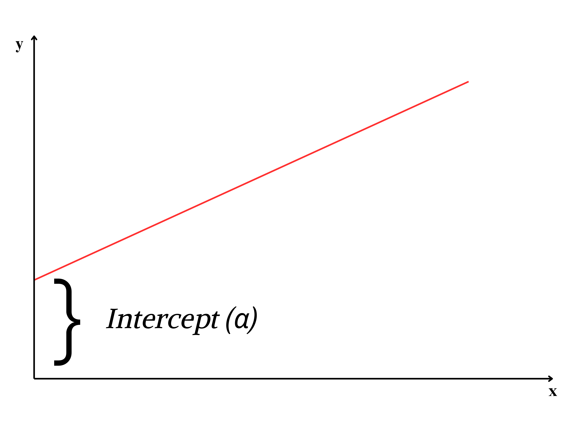

9 Regression Analysis
Regression analysis is the method of using observations (data records) to quantify the relationship between a target variable also referred to as a dependent variable, and a set of independent variables.
9.1 Definition
Regression analysis is a mathematical measure of the average relationship between two or more variables in terms of the original units of the data.
9.2 Simple regression
When only two variables are involved; Regression can be defined as the functional relationship between two variables, where one may represent cause and the other may represent effect. The variable representing cause is known as independent variable and is denoted by ‘X’. The variable ‘X’ is also known as predictor variable, regressor or explanatory variable. The variable representing effect is known as dependent variable and is denoted by Y. For example consider yield and fertilizer dose, here yield can be considered as dependent variable (Y) and fertilizer dose can be considered as independent variable (X).
9.3 Two types of variables
In regression analysis the variable whose values need to be predicted (Y) is called dependent variable and the variable which is used for prediction (X) is called independent variable.
When more than two independent variables are present then the regression is called as Multiple Regression. If only two variables are present then it is called as simple regression.
9.4 Detailed explanation
Correlation is a statistical measure which determines the degree of association of two variables. Regression on other hand side describes how an independent variable is numerically related to dependent variable.
Regression can be simply defined as a technique of fitting best line or line of best fit to estimate value of one variable on the basis of another variable. Now what is a best line? or line of best fit?
For explaining further, consider the example of Ice cream sales:
Example 8.1: The local ice cream shop keeps track of how much ice cream they sell versus the temperature on that day; here are their figures for the last 12 days:
| Temperature (°C) | Ice Cream Sales (in $) |
|---|---|
| 14.2 | 215 |
| 16.4 | 325 |
| 11.9 | 185 |
| 15.2 | 332 |
| 18.5 | 406 |
| 22.1 | 522 |
| 19.4 | 412 |
| 25.1 | 614 |
| 23.4 | 544 |
| 18.1 | 421 |
| 22.6 | 445 |
| 17.2 | 408 |
We can use regression analysis to answer the following questions
What will be the Ice cream sales when temperature is 20o Celsius?
What is the functional form of relationship between Temperature and Ice cream sales?
We can draw a line to denote the functional relationship between temperature and sales

You can see that as shown above we can draw any number of lines, so which is the best fit line?
We can say the best fit line is the line that passes through all points such that distance of each point to the line is minimum. Using regression technique we could easily draw such a line. Before proceeding you should know the concept of error and residuals.
9.5 Error and residual
An error is the difference between the observed value and the true value (true value is the unobserved population mean of the population from which sample observations are taken). A residual is the difference between the observed value and the predicted value (by the model fitted line). Error cannot be measured but residual can be; so residual is considered as an estimate of error.

The distance of each observation (ei) from the fitted line can be considered as the residual (error). Best fit line can be obtained by minimizing this distance. This can be achieved using the mathematical technique “principle of least squares”.
9.6 Straight lines
A straight line is the simplest figure in geometry.
Mathematical equation of a straight line Y= a + bX.
Two important features of a line slope and intercept. a is the Y-intercept, the intercept of a line is the y-value of the point where it crosses the y-axis. b is the slope of a line, which is a number that measures its “steepness”. It is the change in Y for a unit change in X along the line. In regression b is called as regression coefficient.
Intercept (a)

Slope (b)
a and b can be considered as a finger print of a line; with these values we can easily identify the line.
So now our problem is simple, to find a line of best, estimate a & b, such that error ei of each observation is minimized. For that we use the method of least squares.
9.7 Method of least squares
On considering the error term ei; equation of a straight line is
yi=a+bxi+ei;
Where ei is the ith error term corresponding to yi, i =1,2,…,n
Line of best fit can be obtained by estimating a and b by minimizing error sum ’Σei’. By theorem Σei =0; so a and b are estimated by minimising Σei 2
9.8 Principle of least squares
The statistical method used to determine a line of best fit by minimizing the sum of squares of the error term Σei 2
yi=a+bxi+ei;
ei = yi – (a+bxi)
ei2 = {yi – (a+bxi)}2
Σei2 = Σ {yi – (a+bxi)}2
Σei2 is called as error sum of squares. As we are minimizing error sum of squares, hence the name principle of least squares.
We want to minimize, E = Σei2 = Σ {yi – (a+bxi)}2
i.e. we need to find a and b such that E is minimum
E can be minimized by taking derivative with respect to a and b and equating to zero. On doing so we will get two equations, these equations are termed as normal equations and solving those normal equations will give the formula for a and b.
We are not discussing calculation part here. After taking derivatives we will get two equations (Normal equations) as below:
\[\sum_{i = 1}^{n}{y_{i} = n\mathbf{a} + \mathbf{b}\sum_{i = 1}^{n}x_{i}}\]
\[\sum_{i = 1}^{n}{y_{i}x_{i} = \mathbf{a}\sum_{i = 1}^{n}x_{i} + \mathbf{b}\sum_{i = 1}^{n}x_{i}^{2}}\]
On solving the above equations we will get
Regression coefficient, \[b=\frac{\sum_{i = 1}^{n}{y_{i}x_{i} - \frac{\sum_{i = 1}^{n}{y_{i}\sum_{i = 1}^{n}x_{i}}}{n}}}{\sum_{i = 1}^{n}x_{i}^{2} - \frac{\left( \sum_{i = 1}^{n}x_{i} \right)^{2}}{n}}\]
\[=\frac{cov(x,y)}{var(x)}\]
\[\mathbf{b =}\frac{\mathbf{cov(x,y)}}{\mathbf{var(x)}} \]
\[\mathbf{a = }\overline{\mathbf{y}}\mathbf{- b}\overline{\mathbf{x}}\]
where \(\overline{y}\) = mean of y; \(\overline{x}\) = mean of x
9.9 Two lines of regression
There are two lines of regression- that of y on x and x on y.
Regression of y on x
Consider the two variables x and y, if you are considering y as dependent variable and x as independent variable then your equation is:
y = a + bx
This is used to predict the unknown value of variable y when value of variable x is known. Usually b here is denoted as byx
\[\mathbf{b}_{\mathbf{\text{yx}}}\mathbf{=}\frac{\mathbf{cov(x,y)}}{\mathbf{var(x)}}\]
Consider Example 8.1; considering ice cream sales as dependent variable and temperature as independent variable

Regression of x on y
Consider the two variables x and y, if you are considering x as dependent variable and y as independent variable then your equation is:
x= c + my; where c is the intercept and m is the slope
This is used to predict the unknown value of variable x when value of variable y is known. Usually b here is denoted as bxy
\[\mathbf{b}_{\mathbf{\text{xy}}}\mathbf{=}\frac{\mathbf{cov(x,y)}}{\mathbf{var(y)}}\]
Consider Example 8.1; considering temperature as dependent variable and ice cream sales as independent variable

You can see both the regression were different. It depends on the experimenter to choose dependent and independent variable. In the above example it is evident that considering temperature as dependent variable is meaningless, i.e. what is the usefulness in predicting temperature based on ice cream sales?. So the selection of dependent and independent variable is entirely the discretion of experimenter based on the objective of his study.
9.10 Assumptions of Regression
If y is the dependent variable and x is the independent variable then
The x’s are non-random or fixed constants.
At each fixed value of x the corresponding values of y have a normal distribution about a mean.
For any given x, the variance of y is same.
The values of y observed at different levels of x are completely independent.
9.11 Properties of Regression coefficients
- The correlation coefficient between x and y is the geometric mean of the two regression coefficients byx and bxy
\[r = \sqrt{b_{\text{yx}}b_{\text{xy}}}\]
Regression coefficients are independent of change of origin but not of scale.
If one regression coefficient is greater than unity, then the other must be less than unity but not vice versa. i.e. both the regression coefficients can be less than unity but both cannot be greater than unity, i.e. if byx >1 then bxy <1 and if bxy >1, then byx <1.
Also if one regression coefficient is positive the other must be positive (in this case the correlation coefficient is positive) and if one regression coefficient is negative the other must be negative (in this case the correlation coefficient is negative).
The range of regression coefficients is \(- \infty\) to \(+ \infty\).
If the variables ( X ) and ( Y ) are independent, the regression coefficients are zero. This is referred to as the independence property of regression coefficients.
9.12 Uses of Regression
Prediction: The regression analysis is useful in predicting the value of one variable from the given value of another variable. Such predictions are useful when it is very difficult or expensive to measure the dependent variable, Y.
Identify the strength of relationship: The regression might be used to identify the strength of the effect that the independent variable(s) have on a dependent variable. Like the strength of relationship between dose and effect, sales and marketing spending, or age and income.
Forecast effects or impact of changes: That is, the regression analysis helps us to understand how much the dependent variable changes with a change in one or more independent variables. A typical question is, “how much additional sales income do I get for each additional 1000 spent on marketing.
Predicts trends and future values: The regression analysis can be used to predict trend and future values, like “what will be the price of gold in 6 months?”
9.13 Properties of Regression lines
Regression lines minimize the sum of squared deviations of observed values from the predicted values, ensuring the best possible fit.
The regression lines intersect at the mean values of ùëãandùëå i.e., at (\(\overline{X}\),\(\overline{Y}\))
The slopes of the regression lines are related to the correlation coefficient r. If r=0, the lines are perpendicular, indicating no linear relationship.
9.14 Example problem
Now consider the example 8.1 and answer the questions
| Temperature (°C) | Ice Cream Sales (in $) |
|---|---|
| 14.2 | 215 |
| 16.4 | 325 |
| 11.9 | 185 |
| 15.2 | 332 |
| 18.5 | 406 |
| 22.1 | 522 |
| 19.4 | 412 |
| 25.1 | 614 |
| 23.4 | 544 |
| 18.1 | 421 |
| 22.6 | 445 |
| 17.2 | 408 |
What is the functional form of relationship between Temperature and Ice cream sales?
What will be the Ice cream sales when temperature is 20o Celsius?
Solution
Fit a model considering Ice cream sales as dependent variable (y) and temperature as independent variable (x). Fitting a model means estimating b and a using equation.
After fitting the model put 20 in the x value you will get the predicted y value
Model: y = a+bx
| Sl No. | Temperature (x) | Sales (y) | $(x_{i}-\overline{x})$ | $(y_{i}-\overline{y})$ | $(x_{i}-\overline{x})(y_{i}-\overline{y})$ | $(x_{i}-\overline{x})^2$ |
|---|---|---|---|---|---|---|
| 1 | 14.2 | 215 | -4.475 | -187.42 | 838.69 | 20.0256 |
| 2 | 16.4 | 325 | -2.275 | -77.417 | 176.123 | 5.17563 |
| 3 | 11.9 | 185 | -6.775 | -217.42 | 1473 | 45.9006 |
| 4 | 15.2 | 332 | -3.475 | -70.417 | 244.698 | 12.0756 |
| 5 | 18.5 | 406 | -0.175 | 3.58333 | -0.6271 | 0.03063 |
| 6 | 22.1 | 522 | 3.425 | 119.583 | 409.573 | 11.7306 |
| 7 | 19.4 | 412 | 0.725 | 9.58333 | 6.94792 | 0.52562 |
| 8 | 25.1 | 614 | 6.425 | 211.583 | 1359.42 | 41.2806 |
| 9 | 23.4 | 544 | 4.725 | 141.583 | 668.981 | 22.3256 |
| 10 | 18.1 | 421 | -0.575 | 18.5833 | -10.685 | 0.33062 |
| 11 | 22.6 | 445 | 3.925 | 42.5833 | 167.14 | 15.4056 |
| 12 | 17.2 | 408 | -1.475 | 5.5833 | -8.2354 | 2.17563 |
| **SUM** | **224.1** | **4829** | **0** | **0** | **5325.03** | **176.983** |
n =12
\[mean,\overline{x} = \ \frac{224.1}{12} = 18.675\]
\[mean,\overline{y} = \ \frac{4829}{12} = 402.416\]
Cov (x,y) = \[\frac{1}{n}\sum_{i = 1}^{n}{\left( x_{i} - \overline{x} \right)\left( y_{i} - \overline{y} \right)}\]
\[\sum_{i = 1}^{12}{\left( x_{i} - \overline{x} \right)\left( y_{i} - \overline{y} \right)} = 5325.03\]
\[Cov (x,y) = \frac{5325.03}{12} = 443.752\]
\[variance\ of\ x,\ var\left( x \right) = \ \frac{1}{n}\sum_{i = 1}^{n}\left( x_{i} - \overline{x} \right)^{2} = \frac{176.983}{12} = 14.7485\]
\[\mathbf{b =}\frac{\mathbf{cov(x,y)}}{\mathbf{var(x)}}\]
\[\mathbf{b =}\frac{443.752}{14.7485}\mathbf{=}30.088\]
\[\mathbf{a =}\overline{\mathbf{y}}\mathbf{- b}\overline{\mathbf{x}}\]
\[\mathbf{a =}402.416 - 30.088\left( 18.675 \right) = \ - 159.477\]
So our model is
\[y = \ - 159.477 + 30.088x\]
\[Ice\ cream\ sales = \ - 159.477 + 30.088(Temperature)\]
Ice cream sales when temperature is 20o Celsius
\[x = 20\]
\(y = \ - 159.477 + 30.088(20)\) = 442.283
So the predicted ice cream sales at 20o Celsius is 442.283
.